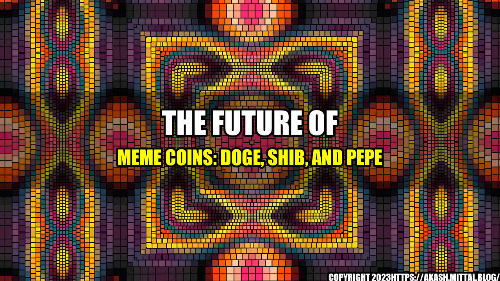

The Future of Meme Coins: DOGE, SHIB, and PEPE
It's hard to believe that just a few years ago, cryptocurrency was seen as a fringe investment that was only used by a select group of tech-savvy individuals. But today, cryptocurrencies like Bitcoin, Ethereum, and Litecoin have become household names, with millions of people around the world investing in these digital assets.
And now, a new type of cryptocurrency has emerged - the meme coin. These digital currencies, which are often based on internet memes or viral content, have taken the cryptocurrency world by storm. Some of the most popular meme coins include DOGE, SHIB, and PEPE, each with its own unique features and community of supporters.
The Rise of Meme Coins
The concept of a meme coin is relatively new, with DOGE being the first major player in this space. Created in 2013 by software engineers Billy Markus and Jackson Palmer, DOGE was based on the popular Doge meme, featuring a Shiba Inu dog with broken English captions. Although DOGE started as a joke, it quickly gained a cult following and became one of the most valuable meme coins on the market.
SHIB, which was created in 2020, is another meme coin that has seen explosive growth in recent months. Based on the Shiba Inu breed of dog, SHIB has been dubbed the "DOGE killer" and has become a popular alternative to its predecessor. Meanwhile, PEPE is a newer meme coin that is based on the popular Pepe the Frog meme, which has gained a cult following on the internet in recent years.
The Future of Meme Coins
So what does the future hold for meme coins like DOGE, SHIB, and PEPE? While it's impossible to predict the future with complete accuracy, there are some key factors that may influence the success of these digital currencies.
1. Community Support
One of the most important factors in the success of meme coins is the support of the community. Unlike traditional cryptocurrencies, which are often driven by the technology behind them, meme coins are driven by the passion and enthusiasm of their supporters. If these communities continue to grow and remain committed to their respective meme coins, it's likely that these digital currencies will continue to see success in the future.
For example, DOGE has one of the largest and most passionate communities of any cryptocurrency, with thousands of fans around the world who use the hashtag #DoOnlyGoodEveryday to promote the coin. This community support has helped DOGE remain relevant and valuable, despite its origins as a joke.
2. Mainstream Acceptance
Another factor that could influence the future of meme coins is mainstream acceptance. While some businesses and individuals have started to accept cryptocurrencies as a form of payment, it's still not a common practice. If meme coins can gain widespread acceptance and become a mainstream form of currency, it's likely that their value will continue to increase.
However, this acceptance may be difficult to achieve, especially for coins like SHIB and PEPE, which are relatively new and unknown to many people. Without a strong marketing and promotional campaign, these coins may struggle to gain the widespread acceptance needed to become mainstream currencies.
3. Market Volatility
Finally, the future of meme coins may be influenced by market volatility. As with all cryptocurrencies, the value of meme coins can fluctuate wildly based on market conditions and investor sentiment. If these coins experience a significant drop in value, it's possible that they could lose support from their communities and become irrelevant.
However, it's also possible that meme coins could become more resilient to market volatility over time, as their communities grow stronger and more committed to their success. Only time will tell whether these coins will become more stable and reliable investments, or if they will remain volatile and unpredictable for the foreseeable future.
Conclusion
Meme coins like DOGE, SHIB, and PEPE have taken the cryptocurrency world by storm, attracting millions of investors and enthusiasts around the world. While the future of these digital currencies is uncertain, there are several key factors that may influence their success, including community support, mainstream acceptance, and market volatility.
Whether you're a cryptocurrency investor or simply a fan of internet memes, it's clear that meme coins are here to stay. By staying informed and paying attention to the latest developments in this space, you can stay ahead of the game and make informed decisions about your investments.
Want to Learn More?
Check out these resources to learn more about meme coins and the cryptocurrency world:
Dogecoin Price Index SHIB Price Chart and Market Cap PEPE Price and Analysis
Curated by Team Akash.Mittal.Blog
Share on Twitter Share on LinkedIn